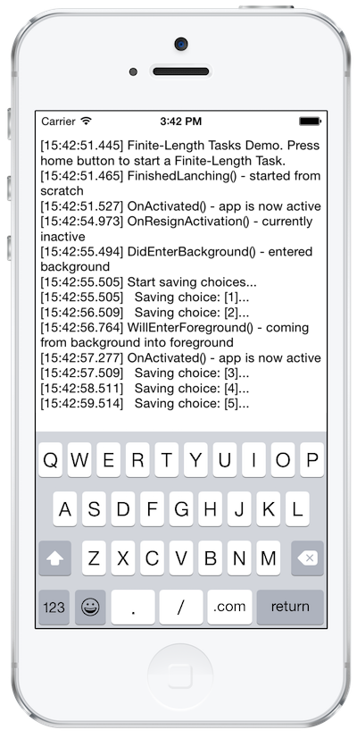

Duration
15 minutes
Goals
Apps often have to save state information when leaving the foreground. In this exercise you will learn how to request enough time from the operating system to complete such an operation.

How do I install the iOS7 simulator?

Required assets
The provided Part 01 Resources folder contains a subfolder named Lab.Start with a solution you should use as a starting point. There is also a Lab.Completed folder with the completed code if you want to compare your solution.
Exercise Overview
You can find a starter solution in the Lab.Start folder under Part 01 Resources.
It overrides all lifecycle methods and logs their calls to the console and also to the app's only view so you can track to order of the individual calls.
In the application delegate you find a method SaveUserChoices() that simulates saving the app's current state.
- Call
SaveUserChoices()when the application transitions into background state. - To prevent termination of the app because of the long running saving process, run the method in
a separate
Taskand await it. - iOS will suspend the
Task. To avoid this, begin a Finite-Length Task and end it if the the saving process is finished or the available background has expired. - Run the app and press the home button (you can simulate the home button press by using the iOS Simulator menu "Hardware -> Home" or by pressing "CMD+SHIFT+H") to move the app into background state. You should see that the output to the console continues and eventually completes.
Steps
Below are the step-by-step instructions to implement the exercise.
Start a finite-length task
Open AppDelegate.cs and locate the SaveUserChoices() method. It simulates saving
data by sleeping for 20 seconds. After each second it outputs something to the console.
-
DidEnterBackground()is the method that will be called if the app moves into the background state. To execute our saving method asynchronously and to begin a Finite-Length Task, add the following code:-
Call
UIApplication.BeginBackgroundTask, passnullfor the completion callback (we'll fix this later), and store the returned identifier in thetaskIdfield. -
Use
Task.Runto create a new asynchronous task and callSaveUserChoices. -
Use the
async / awaitkeywords to properly wait until the task is completed (rememner this does not block the thread, but instead creates a continuation which executes the remainder of the code after the task is finished). -
Call
UIApplication.EndBackgroundTask, passing the task identifier. Wrap this call in anifcondition that tests to make sure thetaskIdfield has a valid value (!= -1) and reset it to (-1) when you have ended the iOS task.
-
Call
-
If you return to the application while the
SaveUserChoices()method is still running you can end the Finite-Length Task. To do this, overrideWillEnterForeground()and callUIApplication.EndBackgroundTask(). Make sure to test thetaskIdvalue before callingEndBackgroundTask!
Summary
To prevent threads from being suspended, you must begin a Finite-Length Task. This allows you to continue an ongoing operation even if the app gets backgrounded. In this exercise, you have used the BeginBackgroundTask and EndBackgroundTask methods to enable threads to continue execution for a short period of time after your application has been backgrounded.